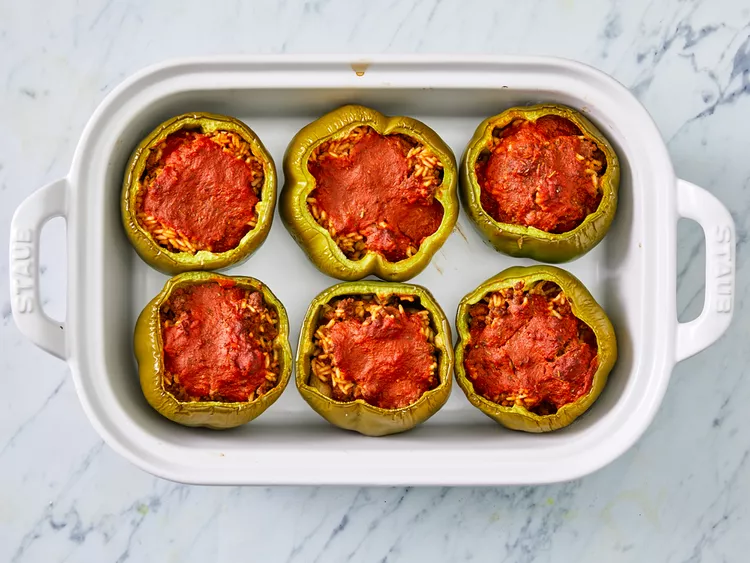

Return Home
Stuffed Peppers

How to make Stuffed Peppers!
Making classic stuffed bell peppers is easier than you think. You'll find the full recipe below,
but here's a brief overview of what you can expect:
Ingredients
- 1 cup cold water
- 1/2 cup uncooked long grain rice
- 1 tbsp vegetable oil
- 1lb ground beef
- 6 medium green bell peppers
- 16oz tomato sauce, divided
- 1tbsp Worcestershire sauce
- 1/4 tsp garlic powder
- 1/4 tsp onion powder
- salt and ground black pepper to taste
- 1 tsp italian seasoning
Steps
- Preheat oven 350 degrees F.
- bring water and rice to a boil in covered saucepan.
Reduce head to low and simmer until rice is tender
- Meanwhile, heat oil in a skillet over medium heat.
Add ground beef and cook until evenly browned and crumbly, 7 to 9 minutes.
- Hollow out bell peppers by removing and discarding the tops, seeds, and membranes. Slice the bottoms of the peppers if necessary to make sure they stand up straight.
- Arrange peppers in a baking dish with the hollowed sides facing upward.
- Prepare filling by mixing cooked beef, cooked rice, 1/2 of the tomato sauce, Worcestershire sauce, garlic powder, onion powder, salt, and pepper. Spoon an equal amount of filling into each hollowed pepper.
- Mix remaining tomato sauce and Italian seasoning in a bowl, and pour over the stuffed peppers.
- Bake in the preheated oven, basting with sauce every 15 minutes, until peppers are tender, about 1 hour.
- Serve hot and enjoy!